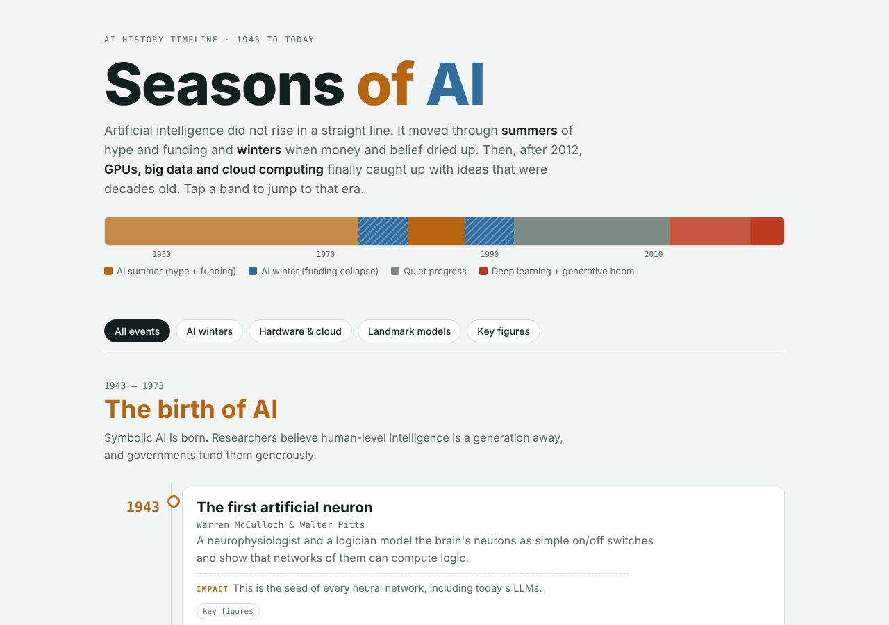
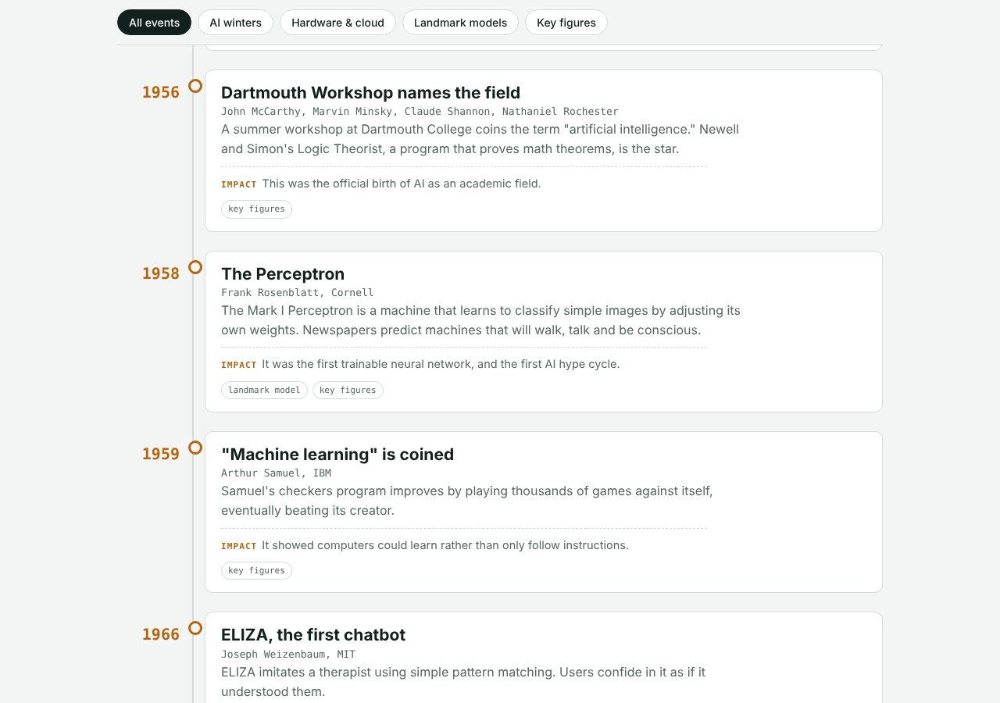
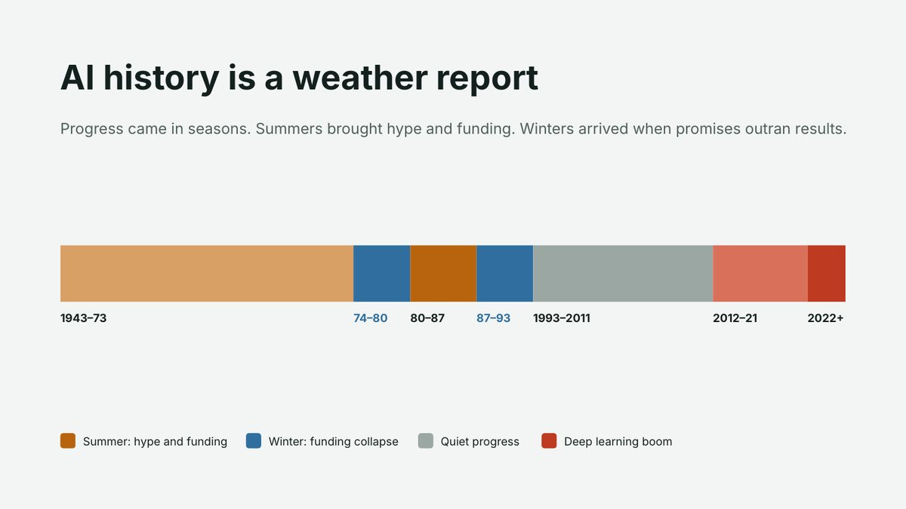
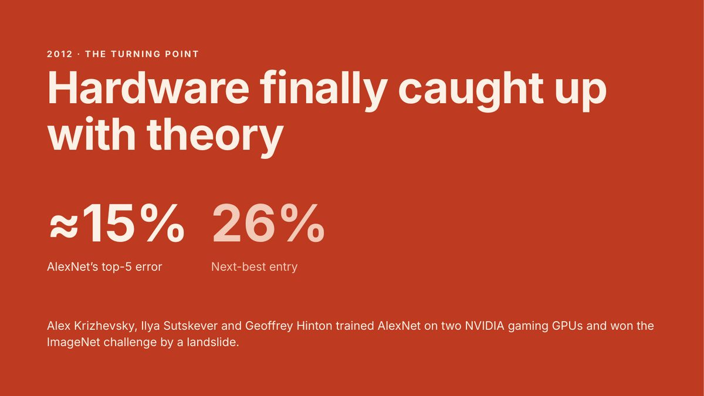
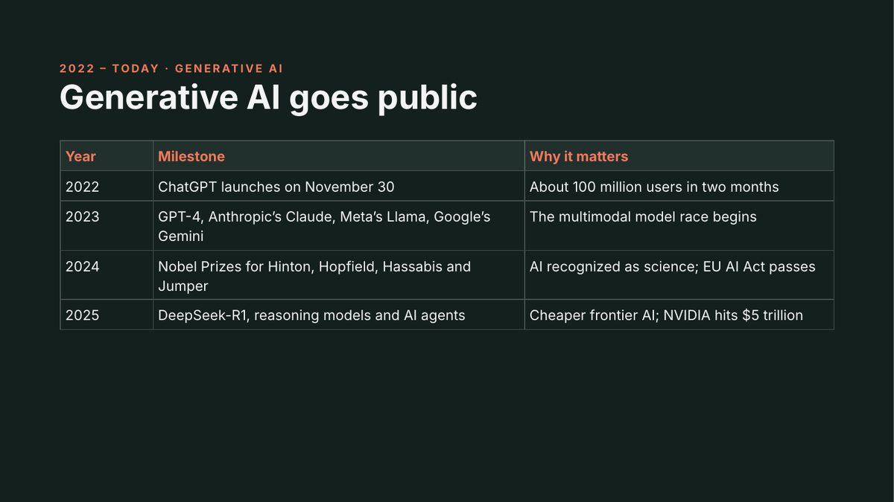
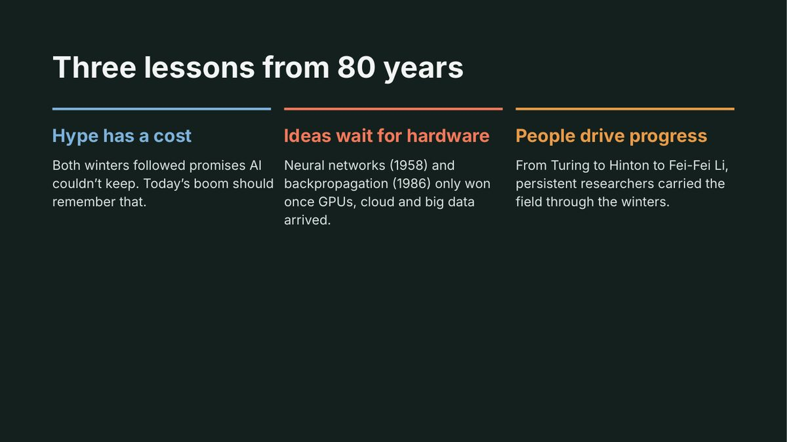

Introduction
Artificial intelligence did not rise in a straight line. It moved through summers of hype and funding and winters when money and belief dried up. Then, after 2012, GPUs, big data and cloud computing finally caught up with ideas that were decades old.
Seasons of AI tells that story as a weather report. I built it so a colleague with no technical background can understand in about ten minutes where today's AI came from, and why the current boom is different from, and similar to, the ones that came before.
Description
The artifact has two forms: a public, interactive web page for self-guided reading and a 14-slide deck for presenting the same story to a group.
The interactive timeline
- A heat strip maps all 80 years at a glance: warm bands for AI summers, hatched blue bands for the two winters, grey for quiet progress and red for the deep learning and generative boom. Selecting a band jumps to that era.
- Seven eras and 29 events, from the first artificial neuron (1943) to reasoning models and the compute boom (2025). Each event names the people involved, explains what happened and states why it mattered.
- Filters show only AI winters, hardware and cloud milestones, landmark models or key figures.
- Two framing ideas (symbolic versus connectionist AI, and narrow AI versus AGI), a summary of today's leading players across models, chips and cloud, and cited sources.
- Works on phones and desktops and supports light and dark mode.
Open the timeline in a full window




The slide deck








Objective
The assignment asked for an AI and ML timeline. I set three goals for it:
- Understand the major milestones of AI and the people behind them, and why progress stalled twice.
- Explain the role of hardware, data and cloud computing in the shift from rule-based AI to today's learning systems.
- Create a resource that others, especially non-technical colleagues, can use to calibrate their expectations of AI.
Process
- ResearchI studied an overview video on the last 100 years of AI, the IEEE Computer Society's history of AI, Our World in Data's brief history and compute trends, the original Transformer paper and the 2024 Nobel Prize in Physics announcement.
- Find the structureRather than list dates, I grouped events into seven eras by funding and belief: two summers, two winters, a quiet period of groundwork, the deep learning revolution and the generative era.
- Write each eventFor each of the 29 events I wrote three things: who was involved, what happened and why it mattered. The "why it mattered" line forces each entry to earn its place.
- Design the metaphorWarm colors for summers and cold, hatched blue for winters make the boom-and-bust pattern visible before anyone reads a word.
- Build and publishI built the timeline as a single HTML, CSS and JavaScript page, added filters and the heat strip, and published it on GitHub Pages. I then adapted the content into a 14-slide deck for presenting.
- VerifyI checked each event against the sources and added an AI use disclosure to both versions.
Tools and technologies used
- HTML, CSS and JavaScript
- The interactive page, heat strip and event filters, with no frameworks.
- GitHub Pages
- Free hosting with a public, shareable link.
- Microsoft PowerPoint
- The 14-slide presentation version.
- Google Fonts
- Bricolage Grotesque and IBM Plex for typography.
- Claude (Anthropic)
- Assisted with milestone research and design; disclosed on the page and in the deck.
- Research sources
- YouTube, IEEE Computer Society, Our World in Data, arXiv and NobelPrize.org.
Value proposition
This artifact shows that I can turn a complex technical history into a clear, accurate resource that helps people make better judgments about AI.
It demonstrates research, synthesis and communication for a non-technical audience: the same skills I use when I explain model results to business stakeholders.
Unique value
- A systems engineer's lens. The timeline gives hardware, data and cloud computing equal weight with algorithms. Neural networks (1958) and backpropagation (1986) only won once the infrastructure arrived, a pattern I recognize from aerospace and energy systems work.
- A pattern, not a list. The seasons metaphor turns 80 years of dates into one idea anyone can remember: hype that outruns results leads to a winter.
- Built to be used. It is interactive, filterable, mobile-friendly and sourced, and it comes in a second format for live presentations.
Relevance
For leaders and decision makers, both AI winters followed promises AI could not keep. Knowing that history helps an organization invest in AI with realistic expectations rather than hype.
For my work in healthcare analytics, it frames the conversation I have when teams ask what AI can do for pricing: the value comes from good data, enough compute and clear limits, not from the label "AI."
For students and educators, it is a free, ready-to-use resource for teaching AI history, with filters for focusing on people, models, hardware or the winters.
References
- IEEE Computer Society. (n.d.). The evolution of AI: From foundations to future prospects. https://www.computer.org/publications/tech-news/research/evolution-of-ai
- Our World in Data. (n.d.). A brief history of artificial intelligence. https://ourworldindata.org/brief-history-of-ai
- Putchuon. (2024, May 30). The entire history of artificial intelligence (Last 100 years) [Video]. YouTube. https://www.youtube.com/watch?v=mSd9nmPM7Vg
- The Nobel Prize. (2024). The Nobel Prize in Physics 2024. https://www.nobelprize.org/prizes/physics/2024/summary/
- Vaswani, A., Shazeer, N., Parmar, N., Uszkoreit, J., Jones, L., Gomez, A. N., Kaiser, Ł., & Polosukhin, I. (2017). Attention is all you need. arXiv. https://arxiv.org/abs/1706.03762